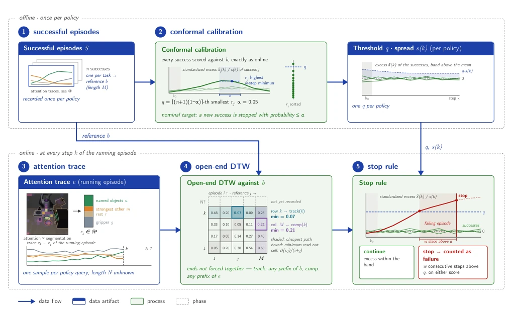

Fig. 1. Combinatorial instruction testing for VLA policies

Fig. 2. The monitor. Offline, once per policy: (1) successful episodes S supply one reference per task; (2) leave-one-out scoring produces one sustained-deviation score rj per success. Sorting these scores sets the shared height q using the nominal false-stop target α = 0.05. Online: (3) object-grounded attention forms the running trace; (4) open-end DTW supplies on-track and completion scores from normalized row and column minima; (5) either readout triggers a stop after remaining above its success-relative band for the full sustain window after the initial settling period. The α annotation denotes a nominal target (Sec. III-D).
Fig. 3. Monitored OpenVLA episodes. Top row: the reference at the same moments and at its end. Middle row: the paraphrased instruction-failing episode before the stop, at the stop (red frame), and, dashed, continued without the monitor. Bottom: the monitored signals and their divergence.